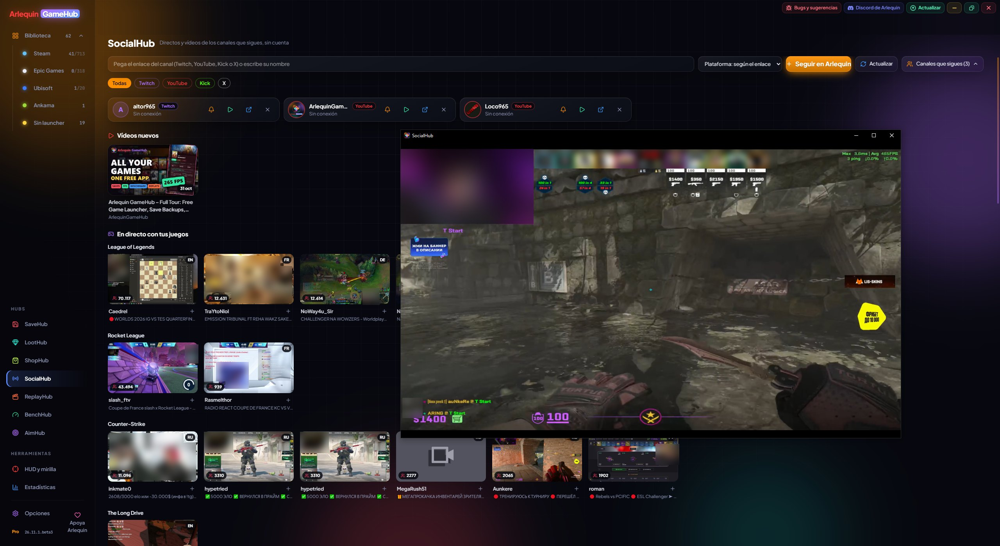

SocialHub
Deine Twitch-, YouTube- und Kick-Kanäle in GameHub, ohne Konto.
SocialHub folgt den Twitch-, YouTube- und Kick-Kanälen, die du auswählst, ohne Anmeldung irgendwo, und sagt dir Bescheid, wenn sie live gehen oder ein Video hochladen. Du schaust sie in GameHub, mit dem offiziellen Player jeder Seite.
Außerdem zeigt «Live mit deinen Spielen», wer gerade die Spiele streamt, die du installiert hast – so entdeckst du neue Kanäle. Deine Kanalliste wird nur auf deinem PC gespeichert.
Mit «Spiele auswählen» blendest du Spiele aus, die dich nicht interessieren, fügst weitere aus den meistgesehenen auf Twitch hinzu und wählst, in welchen Sprachen du Streams sehen willst (mehrere gleichzeitig), für alle Spiele oder für jedes einzeln.
So geht’s
- SocialHub findest du in der Seitenleiste unter Hubs.
- Füge den Link des Kanals ein oder gib den Namen ein und wähle die Plattform.
- Mit der Glocke jedes Kanals legst du fest, ob er dich benachrichtigt; bei X wird nur der Link gespeichert.
- Wenn du es aus dem Seitenmenü entfernst, prüft SocialHub nichts.

Probierst du es aus?
⬇ Direkter Download 🛍️ Im Microsoft Store herunterladenWindows 10 und 11 (64 Bit) · Kostenlos · Aktualisiert sich selbst